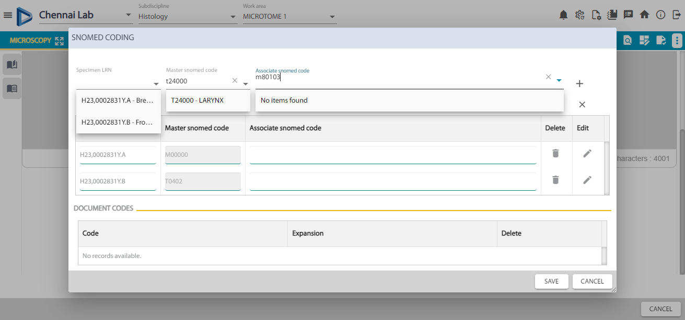

-
Cp Smoke Test
4:41:03 PM / 00:03:26:130 Fail
Cp Smoke Test
07.27.2023 4:41:03 PM 07.27.2023 4:44:29 PM 00:03:26:130 · #test-id=1FailCP order entry - Placing a new orderGiven User in Login pageorg.stepdefinition.Hooks.snapMethod(io.cucumber.java.Scenario)error msgWhen User enters valid username and valid passwordStep skippedAnd Click on Order Management menu, Click on CP order entry menuStep skippedAnd Search for the patient using the given name as Arun and Family name as R and click on SearchStep skippedAnd Select the patient from the GridStep skippedAnd Click on New Order buttonStep skippedAnd Check for the Patient bannerStep skippedAnd Click on the down-arrow keyStep skippedAnd Select a value from the Location field drop-down or type few characters and select the value EX: BREHStep skippedAnd Select a value from the Clinician field drop-down or type few characters (Ste) and select the value EX: SUBStep skippedAnd Select a value from Patient category drop-down as NHSStep skippedAnd Enter collection date and timeStep skippedAnd Enter the details in the following fields - Clinical Comments,Clinical Diagnosis,Clinical question,Medical InterventionStep skippedAnd In the SPECIMEN/BLOCK/PRCODURE pane click on SpecimenStep skippedAnd Click on Histology sub-disciplineStep skippedAnd Double click/Drag and drop on one of the specimen EX: Breast tissueStep skippedAnd Drag and drop one more specimen from Histology sub-discipline Ex: BoneStep skippedAnd In the SPECIMEN/BLOCK/PRCODURE pane click on Procedure group and select a procedure from histology sub-disciplineStep skippedAnd Double click on the second block LRN from popupStep skippedAnd Delete one of the procedure added to the block by click on X in the procedure cardStep skippedAnd Click on Save buttonStep skippedFailSpecimen Dissection - Scanning the SpecimenGiven Click on Laboratory processing menu and Click on Specimen dissection menuorg.stepdefinition.Hooks.snapMethod(io.cucumber.java.Scenario)When User enters Specimen LRN in the scan field and does searchStep skippedAnd Check the details displaying in the Specimen dissectionStep skippedAnd On the First Block,Without entering other details, click on Save Blocks.Step skippedAnd Click on NoStep skippedAnd Again Click on Save Block without entering Pieces, Displays warning , Click on Yes.Step skippedAnd Again scan the Same Specimen LRNStep skippedAnd For Block1,Enter all the details and Verify that on selecting the block Corresponding procedure for that block will be displayedStep skippedAnd Select Keep Setting check box and Click on click on NextStep skippedAnd Now enter no.of Pieces on Block2 as OneStep skippedAnd Click on Save Block and scan the Same Specimen LRNStep skippedAnd Select Disregard Unused Blocks check box and scan the Same Specimen LRNStep skippedAnd Select All Tissue used check box and click on save blocksStep skippedThen Scan the specimen Lrn againStep skippedFailBlock Processing - Scan Block LRNGiven User changes the workarea to Embedorg.stepdefinition.Hooks.snapMethod(io.cucumber.java.Scenario)When User selects the block processing worklist from MenuStep skippedAnd User Scans the order LRN and validate the corresponding blocks for the orderStep skippedAnd Verify Print Save Cancel and CAncel EDits buttonStep skippedAnd Edit the values and verify the save and cancel Edits buttonStep skippedAnd Click on Print buttonStep skippedAnd Click on Save button in Block Processing screenStep skippedFailProcedure Processing - Scan a procedureGiven Click on Laboratory processing menu and Click on Procedure processing worklist menu.org.stepdefinition.Hooks.snapMethod(io.cucumber.java.Scenario)When Scan with Procedure LRN and press ENTER key and Verify the columns in the grid.Step skippedAnd Verify Print Save Cancel and CAncel EDits buttonStep skippedAnd Edit the values and verify the save and cancel Edits button in Pp screenStep skippedAnd Click on Print button in pp screenStep skippedAnd Click on Save button in pp screenStep skippedAnd Click on Assign button.Step skippedThen Click on cancel button.Step skippedFailOrder Verification - Search with order LRNGiven Click on Laboratory processing menu and Click on Order verification menu.org.stepdefinition.Hooks.snapMethod(io.cucumber.java.Scenario)When Scan the Order LRN and hit enter keyStep skippedAnd Check for the verification and history tabStep skippedAnd Double click under scanned column in gridStep skippedAnd Check for Verify and Release buttonStep skippedAnd Click on Release buttonStep skippedAnd Scan the Order LRN and hit enter keyStep skippedAnd Check for the corresponding row under verified columnStep skippedAnd Validate Verify date has been updated against the respective procedureStep skippedThen Click on the History tabStep skippedFailMicroscopy-Saving and releasing the final reportGiven Click on Result Management menu, Click on Microscopy menu.org.stepdefinition.Hooks.snapMethod(io.cucumber.java.Scenario)When Enter OR Scan LRN in Scan field and Press ENTER keyStep skippedAnd Check the patient details displaying in Microscopy screenStep skippedAnd User Selects any reporting pathologist from the reporting pathologist field and enter some details on report editor and Click on SAVE AS optionStep skippedAnd User enters order LRN and retreiving the patientStep skippedAnd User clicks on insert text blocks optionStep skippedAnd User click on Synoptic wizard optionStep skippedAnd User click on Diagnosis coding optionStep skippedAnd User click on Release AS option and selects Final reportStep skipped
-
org.openqa.selenium.WebDriverException
1 tests
org.openqa.selenium.WebDriverException
1 failedStatus Timestamp TestName Fail 16:41:07 PM Given User in Login page Cp Smoke Test.CP order entry - Placing a new order.Given User in Login page -
org.openqa.selenium.NoSuchWindowException
10 tests
org.openqa.selenium.NoSuchWindowException
10 failedStatus Timestamp TestName Fail 16:41:08 PM Given Click on Laboratory processing menu and Click on Specimen dissection menu Cp Smoke Test.Specimen Dissection - Scanning the Specimen.Given Click on Laboratory processing menu and Click on Specimen dissection menuFail 16:41:58 PM org.stepdefinition.Hooks.snapMethod(io.cucumber.java.Scenario) Cp Smoke Test.Specimen Dissection - Scanning the Specimen.org.stepdefinition.Hooks.snapMethod(io.cucumber.java.Scenario)Fail 16:41:58 PM Given User changes the workarea to Embed Cp Smoke Test.Block Processing - Scan Block LRN.Given User changes the workarea to EmbedFail 16:42:49 PM org.stepdefinition.Hooks.snapMethod(io.cucumber.java.Scenario) Cp Smoke Test.Block Processing - Scan Block LRN.org.stepdefinition.Hooks.snapMethod(io.cucumber.java.Scenario)Fail 16:42:49 PM Given Click on Laboratory processing menu and Click on Procedure processing worklist menu. Cp Smoke Test.Procedure Processing - Scan a procedure.Given Click on Laboratory processing menu and Click on Procedure processing worklist menu.Fail 16:43:39 PM org.stepdefinition.Hooks.snapMethod(io.cucumber.java.Scenario) Cp Smoke Test.Procedure Processing - Scan a procedure.org.stepdefinition.Hooks.snapMethod(io.cucumber.java.Scenario)Fail 16:43:39 PM Given Click on Laboratory processing menu and Click on Order verification menu. Cp Smoke Test.Order Verification - Search with order LRN.Given Click on Laboratory processing menu and Click on Order verification menu.Fail 16:44:29 PM org.stepdefinition.Hooks.snapMethod(io.cucumber.java.Scenario) Cp Smoke Test.Order Verification - Search with order LRN.org.stepdefinition.Hooks.snapMethod(io.cucumber.java.Scenario)Fail 16:44:29 PM Given Click on Result Management menu, Click on Microscopy menu. Cp Smoke Test.Microscopy-Saving and releasing the final report.Given Click on Result Management menu, Click on Microscopy menu.Fail 16:44:29 PM org.stepdefinition.Hooks.snapMethod(io.cucumber.java.Scenario) Cp Smoke Test.Microscopy-Saving and releasing the final report.org.stepdefinition.Hooks.snapMethod(io.cucumber.java.Scenario)
-
@cp
6 tests
@cp
6 failedStatus Timestamp TestName Fail 16:41:03 PM CP order entry - Placing a new order Cp Smoke Test.CP order entry - Placing a new orderFail 16:41:08 PM Specimen Dissection - Scanning the Specimen Cp Smoke Test.Specimen Dissection - Scanning the SpecimenFail 16:41:58 PM Block Processing - Scan Block LRN Cp Smoke Test.Block Processing - Scan Block LRNFail 16:42:49 PM Procedure Processing - Scan a procedure Cp Smoke Test.Procedure Processing - Scan a procedureFail 16:43:39 PM Order Verification - Search with order LRN Cp Smoke Test.Order Verification - Search with order LRNFail 16:44:29 PM Microscopy-Saving and releasing the final report Cp Smoke Test.Microscopy-Saving and releasing the final report -
@cpLogin
1 tests
@cpLogin
1 failedStatus Timestamp TestName Fail 16:41:03 PM CP order entry - Placing a new order Cp Smoke Test.CP order entry - Placing a new order
Started
Jul 27, 2023 04:41:02 PM
Ended
Jul 27, 2023 04:44:29 PM
Features Passed
0
Features Failed
1
Features
Scenarios
Steps
Timeline
Tags
| Name | Passed | Failed | Skipped | Others | Passed % |
|---|---|---|---|---|---|
| @cp | 0 | 6 | 0 | 0 | 0% |
| @cpLogin | 0 | 1 | 0 | 0 | 0% |